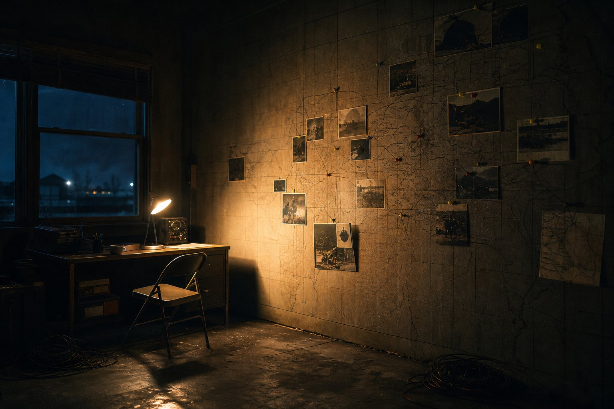

1. Où en est la Saison 7 au 17 novembre 2026
La Saison 7 Utopia a démarré le 16 septembre 2026 et n’a pas de date de fin officielle : elle s’arrête quand la Saison 8 commence, et cette date n’a pas été annoncée. En revanche, tous les événements à durée limitée de la saison ont des dates finies, et la plupart tombent entre le 15 novembre et le 7 décembre. Officiel
Concrètement, au 17 novembre 2026, la situation est la suivante :
- Quatre événements sont encore ouverts : Mysterious Pumpkin Night (jusqu’au 25/26 novembre), Dim Dou Duk Gourmet Market (6 décembre), le Troisième Warlord Tournament (7 décembre) et la série Biohazard avec ses pistes hebdomadaires.
- Deux événements viennent de fermer : la formule Smelter Trash to Treasure (15 novembre) et l’échantillon de sol lunaire (9 novembre).
- Un seul événement est encore en investigation : Kamona Investigation — Tea Break Delights (22 novembre), et c’est le plus urgent.
- La Saison 8 n’a aucune date officielle. Les sources communautaires convergent sur une fenêtre de lancement entre le 3 et le 14 décembre 2026, mais ce n’est qu’une estimation fondée sur la durée des trois dernières saisons. Théorie
Le point de vigilance du 17 novembre
La Kamona Investigation — Tea Break Delights ferme le 22 novembre 2026 : il reste 5 jours. C’est la seule piste encore active qui demande de rendre quatre objets (lait, miel, pellicule et raviolis Dim Dou Duk). Les événements de collecte pure, eux, ne disparaissent pas quand on arrête de les farm — mais une investigation non rendue, elle, disparaît avec son stock. Officiel
2. Comment fonctionnent les événements chez MoreFun
Le jeu n’a pas une seule catégorie d’ « événement ». Il y en a six, et elles se combinent. Confondre deux catégories est la première cause de mauvaise programmation : on passe une heure à farmer un objet qui n’a aucun intérêt pour la piste qu’on vise. Officiel
Le festival saisonnier
Le plus gros dispositif : un thème (Halloween, Biohazard, Été) qui ajoute une dizaine de pistes de récompenses sur plusieurs semaines. Chaque festival a sa date d’ouverture et sa date de fin, souvent échelonnées piste par piste.
- Biohazard & Bountiful Autumn Festival — 24 septembre au 28 octobre 2026.
- Mysterious Pumpkin Night — 29 octobre au 25/26 novembre 2026.
- Dim Dou Duk Collaboration — 9 novembre au 6 décembre 2026.
Le mode événementiel
Un mode de jeu à part entière, avec ses propres règles de score et son propre écran de récompense. On y entre avec un pass ou des Koen, et on en sort avec une crate à régler.
- Supplies Drops 2.0 — co-op, réapparitions illimitées, crate à niveaux.
- Zombie Endless et Infected Area — modes infectés de la S7.
- Secure Ops — on garde son équipement même en mourant.
- Classes d'élite S7 — breacher, sniper, grenadier, fumigator déployés sur les cartes du mode principal, à menace réduite.
Le concours
Un classement séparé du rang de saison, où l’on monte par étoiles. Les règles ont changé à chaque édition, ce qui rend obsolètes les guides des tours précédents.
- Troisième Warlord Tournament — 29 octobre au 7 décembre 2026.
- Une piste de missions parallèle distribue des jetons échangeables.
La piste d’enquête
Le joueur collecte une liste d’objets imposés et les rend à l’écran d’événement. La fenêtre est courte et le stock nécessaire peut être volumineux.
- Kamona Investigation — phase Tea Break Delights, 9 au 22 novembre 2026.
- Une seconde couche, Investigate Drawers, overlaps la première.
La piste hebdomadaire
Ces pistes se réinitialisent chaque semaine. Ce qui n’est pas rendu le lundi disparaît : il n’y a pas de report.
- Extermination Mission — tenue Hazmat complète.
- Merit Challenge — jusqu’à 3 000 000 Koen par semaine.
- Zombies No Man’s Land — passes de connexion et de jalons.
La collecte d’objets d’événement
Des objets rares dropés en raid dans des contenants précis, avec une date d’expiration. On les dépense ou on les échange hors raid.
- Dim Sum Vouchers — sacs de sport et valises, toutes cartes.
- Lunar Soil Sample — 780 000 Koen, coffres, jusqu’au 9 novembre.
- Festive Pumpkin — achetable, évolutif, non protégeable.
3. Toutes les échéances de la Saison 7
Le tableau ci-dessous est l’outil de travail principal. Les dates sont celles des notes officielles et des annonces du compte officiel ; la colonne « reste » est calculée au 17 novembre 2026.
- 9 nov. 2026 Lunar Soil Sample Échantillon de sol lunaire — 780 000 Koen, dans les coffres, toutes cartes Terminé — il y a 8 j
- 15 nov. 2026 Trash to Treasure Formule Smelter Halloween : PDA + Câble de données + Ordinateur portable Terminé — il y a 2 j
- 22 nov. 2026 Kamona Investigation — Tea Break Delights Lait, miel, pellicule, raviolis Dim Dou Duk à rendre 5 jours
- 25 nov. 2026 Mysterious Pumpkin Night Fin officielle : 26 nov. à 05:00 UTC — 6 sous-événements 8 jours
- 6 déc. 2026 Dim Dou Duk Collaboration — Gourmet Market Dim Sum Vouchers, sacs de sport et valises 19 jours
- 7 déc. 2026 Troisième Warlord Tournament Classement séparé, 5 paliers, 30 étoiles au sommet 20 jours
- Hebdomadaire Extermination Mission, Merit Challenge, Zombies No Man’s Land Remise chaque lundi à 05:00 UTC+0 En cours
- Non annoncé Saison 8 — Utopia II Aucune date officielle au 17 novembre 2026 Estimation : 3–14 déc.
Fin d’Halloween : 25 ou 26 novembre ?
L’annonce officielle précise que la série Halloween est disponible « du 29 octobre à 05:00 UTC jusqu’au 26 novembre ». L’ensemble des guides affiche « 25 novembre » parce qu’il raisonne en journées UTC+0 pleines. Les deux lectures désignent le même instant : la coupure est fixée au 26 novembre 2026 à 05:00 UTC, soit la fin de la journée du 25 novembre en UTC+0. Si vous planifiez une extraction de citrouille, visez le 25 au soir, pas le 26 au matin. Officiel
4. Le festival d’automne : Biohazard & Bountiful Autumn Festival
Le festival d’automne a été annoncé le 24 septembre 2026, neuf jours après le lancement de la Saison 7, et a superposé ses pistes à la série Biohazard déjà en cours. Il a produit l’essentiel des récompenses de la saison : 4 800 Bonds gratuits, 14 tickets Zombie No Man’s Land, un skin gratuit de niveau S de classe Tac-Master, et des pistes à plusieurs millions de Koen. Officiel
| Piste | Ouverture | Ce que vous faites | Récompense | Statut |
|---|---|---|---|---|
| Autumn Gift | 24 sept. | Connexion et petites tâches | Skins d’arme gratuits | Terminé |
| Bountiful Autumn Store | 28 sept. | Échanger des points | Skins, dont un Tac-Master au choix (T191 ou M24) | Terminé |
| Bountiful Autumn Challenge | 28 sept. | Défis d’automne | Random Featured Weapon Bundle | Terminé |
| Lunar Soil Sample | 24 sept. | Chercher dans les coffres | Collectible 2×2 à 780 000 Koen | Terminé le 9 nov. |
| Extermination Mission | Hebdo | Éliminer des infectés | Tenue Hazmat complète via Supply Passes | En cours |
| Merit Challenge | Hebdo | Meilleur Merit hebdo en Biohazard Endless | Conversion en Koen ×3, jusqu’à 3 000 000 Koen/sem. | En cours |
| Zombies No Man’s Land | Hebdo | Connexion + jalons 4/8/16 tâches | Passes de connexion ; passes en Infected Area | En cours |
| Dark Zone Patrol | 28 sept. | Envoyer Paul patrouiller | Objets de valeur trouvés par le compagnon | Terminé |
| Vinson’s Challenge | 28 sept. – 28 oct. | Dépenser des Koen sur la page | Récompenses de défi (Koen non remboursable) | Terminé |
| Trash to Treasure | 24 sept. → 15 nov. | Smelter en raid | Module de calcul prototype | Terminé |
| Upgrade Battle Pass | 24 sept. → 28 oct. | 500 Bonds instantanés | Skins, tenue, Koen | Terminé |
| Bundles limités | 24 sept. → 28 oct. | 6 bundles à 4,50 $ | 450 Bonds + carte Élite 7 j + skin exclusif | Terminé |
La piste la plus rentable de la saison n’est pas une collecte
Le Merit Challenge convertit votre meilleur score de Merit hebdomadaire en Biohazard Endless en Koen, avec un multiplicateur de 3, jusqu’à 3 000 000 Koen par semaine. Aucun autre dispositif de la saison n’approche ce montant, et il ne demande ni objet rare ni risque supplémentaire. Officiel
5. Mysterious Pumpkin Night — le détail des six sous-événements
La saison Halloween 2026 est nommée Mysterious Pumpkin Night dans les notes, et le volet citrouille s’appelle Pumpkin Evolution II. Ce n’est pas la première fois : la version 2025 s’était tenue du 24 octobre au 13 novembre 2025, soit 21 jours. La version 2026 dure 28 jours. Officiel
| Sous-événement | Dates | Objectif | Récompense clé |
|---|---|---|---|
| Pumpkin Evolution II | 29 oct. – 25 nov. | Entrer une Festive Pumpkin en raid et en extraire | Citrouilles évoluées, jusqu’à 880 000 Koen |
| Mysterious Night Adventure | 29 oct. – 25 nov. | Missions d’événement → Mysterious Points | Miraculous Festive Pumpkin, skins Night of Fear |
| Mysterious Night: Check In | 29 oct. – 25 nov. | Connexion sur 7 jours | Sleepless Night AK-12, Stormy Night SG550 |
| Pumpkin Messenger Sighted | 29 oct. – 25 nov. | Tuer les Pumpkin Messengers | Autumn Pumpkin Helmet, citrouilles de tout stade |
| Corrupted Treasures | 29 oct. – 25 nov. | Coffres / fabrication en Trophy Room | Fading Dawn, Corrupted Clock |
| Warlord Tournament III | 29 oct. – 7 déc. | Monter dans le classement | Badge, cadre et fond Warlord III |
La campagne de connexion est la partie à risque zéro : sept jours de connexion sur une fenêtre de 28 jours, c’est largement rattrapable. Elle délivre des citrouilles non mûres (le point de départ de l’évolution), le skin Sleepless Night de l’AK-12, le skin Stormy Night du SG550, le charme Jack-o’-Lantern et le charme Pumpkin Monster. Officiel
6. Les événements de novembre en détail
Le 10 novembre 2026 a été la mise à jour la plus dense de la saison après celle du lancement : une collaboration de marque, une phase d’enquête, et douze correctifs. Elle est entrée en vigueur à 03:00 UTC+0. Officiel
Dim Dou Duk Collaboration En cours
9 nov. – 6 déc. 2026 · 28 joursUne collaboration avec une vraie enseigne de dim sum cantonaise. Deux objets entrent dans le loot pool de toutes les cartes : la Dim Sum Voucher, qui est la monnaie de l’événement, et les Dim Dou Duk Shrimp Dumplings, qui est un objet de RAID distinct.
Kamona Investigation — Tea Break Delights Urgent
9 nov. – 22 nov. 2026 · 14 joursL’enquête demande de rendre quatre objets : lait, miel, pellicule, et raviolis Dim Dou Duk Shrimp Dumplings. Les trois premiers sont du loot de nourriture et de valeur moyenne ; les raviolis sortent des mêmes conteneurs que les vouchers.
Trash to Treasure Terminé
29 oct. – 15 nov. 2026La formule Halloween du Smelter : Personal Digital Assistant + Data Cable + Laptop pour une chance d’obtenir le Prototype Calculation Module. Les fours apparaissent dans les zones Lockdown et Forbidden.
Série Biohazard En cours
Depuis le lancement de la S7 · hebdomadaireLa série de zombies de la saison : mode Infected Area dans les raids, Zombie Endless en mode compétitif, et trois pistes hebdomadaires (Extermination, Merit Challenge, Zombies No Man’s Land).
7. Les modes événementiels de la Saison 7
Un événement n’est pas toujours une page de quêtes. Les modes événementiels ont leurs propres règles, et c’est souvent là que se trouve la valeur la plus sûre du jeu. Officiel
| Mode | Format | Règle clé | Ce qu’on en tire |
|---|---|---|---|
| Supplies Drops 2.0 | Co-op PvPvE, 4 équipes, Airport | Loadout fourni, réapparitions illimitées,crate à 5 niveaux | Loot sans risque, plus le Smelter dès le niveau 3 |
| Zombie Endless | Classement infini, infectés | Score de Merit, montée de niveau | Jusqu’à 3 000 000 Koen/semaine via le Merit Challenge |
| Infected Area | Raid Tactique en zone infectée | Zombies mutants, boss de classe Élite affaiblis | Tickets Zombie No Man’s Land et loot rouge de zone |
| Secure Ops | Raid Tactique modifié | On garde son équipement même en mourant | Apprentissage sans perte, koen à l’extraction |
| Hostile Sector | Retiré en S7 | Les tickets restants se vendent à un contact ; les 4 classes d’élite reviennent en mode principal | — remplacé par Zombie Endless (PvE) |
| Warlord Tournament | Classement par valeur de loot | Loadouts visibles, fichier chiffré multiplicateur | Badges, cadre, fond, skins de classe S |
Le point commun des modes événementiels
Presque tous partagent la même logique économique : le risque de votre stuff n’est pas en jeu, donc la bonne décision est de jouer agressivement sur les objectifs et de laisser le loot dans la caisse plutôt que dans le sac. Un guide de Saison 6 qui vous apprend à « ne jamais mourir » vous fait perdre de l’argent en Supplies Drops 2.0. Officiel
8. La série Biohazard en pratique
La S7 a introduit la notion de zone infectée, avec deux modes qui s’articulent : Infected Area, où l’on fait un raid Tactique classique mais avec des zombies mutants et des boss d’élite, et Zombie Endless, un mode à score cumulé. Les événements d-Non se greffent dessus. Officiel
- Extermination Mission — hebdomadaire, remise le lundi à 05:00 UTC+0. Récompense : la tenue Hazmat complète, obtenue via les Supply Passes. C’est un équipement d’événement gratuit, ce qui est rare.
- Merit Challenge — hebdomadaire. Votre meilleur score de Merit en Zombie Endless dans la semaine est converti en Koen, avec un multiplicateur de 3, dans la limite de 3 000 000 Koen par semaine. À faire en priorité.
- Zombies No Man’s Land — hebdomadaire. Connexion quotidienne et passes de jalons aux seuils 4, 8 et 16 tâches quotidiennes. Des tickets droppent aussi en Infected Area.
- Infected Area — en raid. Les zones infectées ajoutent un bonus de risque et un loot rouge plus généreux ; masquez-vous, courez en sprinteur, et gardez Elysium en priorité.
- Zombie Endless — le mode. Le patch du 27 octobre 2026 a abaissé le Merit total requis pour monter de niveau et facilité plusieurs missions « Enter Infected Zone ».
9. Et la Saison 8 ?
Aucune date n’est annoncée. Le compte officiel n’a rien publié sur Steam, sur le site officiel ni dans les notes du patch en direct du 10 novembre, qui ne parle que de la collaboration Dim Dou Duk et de l’enquête Kamona. Officiel
Ce qui est observable : la Saison 7 a démarré le 16 septembre 2026, et les trois dernières saisons ont duré entre 78 et 89 jours. Une extrapolation placerait la Saison 8 entre le 3 et le 14 décembre 2026, et les événements S7 courant jusqu’au 7 décembre, l’estimation la plus citée est la semaine du 8 au 14 décembre. Deux contre-exemples existent : la Saison 3 a débordé sur Noël et la Saison 4 n’a lancé qu’en janvier. Théorie
La probabilité de chaque scénario
| Scénario | Fenêtre | Pourquoi | Probabilité |
|---|---|---|---|
| Cas de base | 8–14 décembre 2026 | Cadence de 78 à 89 jours, et les événements de la Saison 7 courent jusqu’au 7 décembre | ~55 % |
| Précoces | 3–7 décembre 2026 | La saison la plus courte récemment (78 jours), si les événements sont écourtés | ~10 % |
| Report de fin d’année | Début–mi-janvier 2027 | La Saison 3 a débordé sur les fêtes et la Saison 4 a lancé le 8 janvier | ~35 % |
Quand l’annonce tombera, en fait
Les deux dernières saisons ont laissé à peine plus d’une semaine entre l’annonce et le lancement. Le silence du 13 novembre ne signifie donc pas que la Saison 8 est en retard : pour une sortie dans la semaine du 8 au 14 décembre, l’annonce tomberait aux environs du 30 novembre et du 7 décembre. Concrètement, c’est la période pendant laquelle il faut surveiller les annonces Steam et le compte officiel — pas maintenant.
Reste une précision importante : aucune roadmap publique ne couvre la Saison 8, et rien n’indique si le stash sera vidé. Les sites qui annoncent un wipe ou un nouveau mode comme acquis font de la conjecture. La seule chose raisonnablement fiable est la fenêtre de date, parce qu’elle repose sur une cadence observée trois fois.
Ce qui se passe au changement de saison
Arena Breakout: Infinite ne vide pas le stash entre les saisons — ni même à la fin d’un festival. Ce qui expire, ce sont les objets marqués « fournitures de saison », les coupons de tirages de la saison précédente et les monnaies d’événement dont l’écran a été fermé. Les cosmétiques et les objets de collection se conservent. En pratique, vos seuls vrais coupsables sont les coupons de tirages S7, à dépenser avant la fin de la saison. Officiel
10. Plan d’action recommandé au 17 novembre 2026
Voici l’ordre qui maximise le rendement sur les cinq semaines restantes, en tenant compte du fait que les événements se terminent dans un ordre précis et que les pistes hebdomadaires se remettent chaque lundi.
- Ce soir et demain : l’enquête Tea Break Delights. Il reste cinq jours. Faites une sortie dédiée avec un kit léger pour remplacer tout ce qui manque dans les quatre objets à rendre. C’est la seule piste qui disparaît sans préavis de votre stock.
- En parallèle, le Smelter est inaccessible depuis le 15 novembre pour la formule Halloween — mais le Smelter du mode Supplies Drops 2.0 (niveau 3 de crate) reste actif et sans limite d’usage. C’est le relais naturel.
- Cette semaine : viser le niveau 5 de crate en Supplies Drops 2.0. Le mode ne coûte que des Koen ou un pass, il n’a aucun risque sur votre équipement, et le niveau 5 est le seul qui ouvre une ligne au crate personnel. Faites-le avant que le mode ne tourne.
- Le lundi 23 novembre : reset hebdomadaire. Remettez l’Extermination Mission et le Merit Challenge avant la remise de 05:00 UTC+0. Le Merit Challenge à 3 000 000 Koen se joue sur un mode Endless précis.
- Avant le 25/26 novembre : toutes les missions Halloween. Mysterious Night Adventure, Pumpkin Messenger Sighted et Corrupted Treasures. La fenêtre de connexion pour le check-in de 7 jours est la plus facile, mais la campagne de missions à points est celle qui rapporte le plus.
- Du 26 novembre au 6 décembre : la fenêtre Gourmet Market. C’est le plus long événement restant, donc pas le plus urgent. Ramassez les Dim Sum Vouchers au fur et à mesure des sorties de routine, sur un kit bon marché.
- Jusqu’au 7 décembre : le Warlord Tournament. Le classement se règle à la fin de chaque raid, pas à l’extraction : ne quittez pas la carte sur un petit avantage. Et attrapez le fichier chiffré, puis faites sortir son porteur.
Un avertissement qui vaut de l’argent
Chaque événement attire des sites qui vendent des Koen ou des citrouilles déjà évoluées. Ne les utilisez pas. MoreFun a supprimé l’achat de Koen contre de l’argent réel à la version 1.0 et applique une politique de tolérance zéro qui sanctionne les acheteurs autant que les vendeurs : confiscation, baisse du score de Merit, bannissements. Le rapport de sécurité de la saison 6 a listé à lui seul 2 133 confiscations de Koen et 1 217 bannissements de dix ans entre le 13 et le 26 juillet 2026. Tout se gagne en jouant. Officiel
11. Sources
Officiel
- Live Update du 27 octobre 2026 (UTC+0) — annonce de l’événement Halloween, du Troisième Warlord Tournament et de la formule Smelter. x.com/ArenaBreakoutPC (nouvel onglet)
- Live Update du 10 novembre 2026 (UTC+0) — collaboration Dim Dou Duk, lancement de Kamona Investigation, 12 correctifs. patchbot.io (nouvel onglet)
- Biohazard & Bountiful Autumn Festival — annonce officielle du 24 septembre 2026 : les douze pistes du festival, le Lunar Soil Sample et Supplies Drops 2.0. store.steampowered.com (nouvel onglet)
- Notes de mise à jour de la Saison 7 — Utopia — 15 septembre 2026 : Red Drops, Elysium, Collection Room, fichier chiffré du Warlord. store.steampowered.com (nouvel onglet)
- Annonces de festivals précédents — Kamona Summer Festival (13 août – 13 sept. 2026) et Resident Evil / Girls’ Frontline 2 collaborations, pour la structure des pistes. idcgames.com (nouvel onglet)
Communautaire
- timesaver.gg — calendriers événementiels, tableaux de récompenses et analyses de règles pour la S7, y compris la confirmation de l’absence de date pour la Saison 8. timesaver.gg (nouvel onglet)
- senseos.gg — registre des objets rouges de la saison : dates d’expiration du Lunar Soil Sample, liste des Red Drops S7. senseos.gg (nouvel onglet)
- abibuilder.com — calendrier événementiel agrégé, utile pour recouper les dates de rotation. abibuilder.com (nouvel onglet)
- r/ArenaBreakoutInfinite — fils « 5 raids havent found a single one » (vouchers Dim Sum), discussions sur l’expiration des citrouilles et les seuils du Smelter. reddit.com (nouvel onglet)
- gamers.wiki et overgear.com — règles du mode Supplies Drops d’origine (niveau 6, pass ou 300 000 Koen) et usage des crates personnel / équipe. gamers.wiki (nouvel onglet)
Non confirmé
- La fenêtre de lancement de la Saison 8 (3–14 décembre 2026) est une extrapolation fondée sur la durée des trois dernières saisons ; elle n’a jamais été annoncée par MoreFun.
- Les seuils de rendement du Smelter rapportés sur Reddit (quantités et probabilités) sont des observations de joueurs, jamais publiés par l’éditeur.
- Le fait que les objets fournis par l’opérateur ne puissent pas être smeltés, et que les objets de qualité Or ne puissent pas entrer en raid, repose sur des tests communautaires et des notes de correctif partielles ; seule l’interdiction des misc-items de qualité Or est explicitement documentée.
- Les points d’apparition, la vie et les horaires des Pumpkin Messengers ne sont pas publiés par l’éditeur.